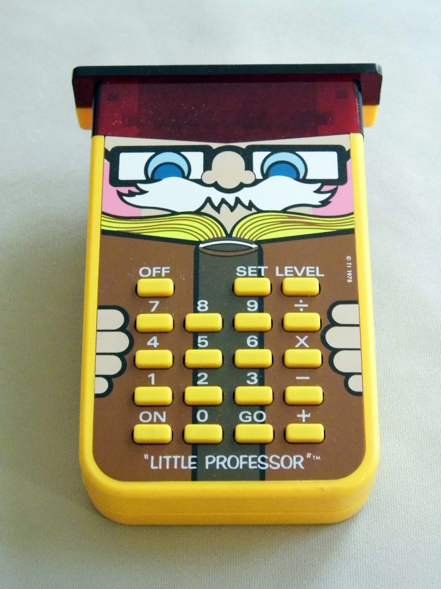

TI Little Professor
The backwards calculator — a machine that asks the questions

Overview
The Little Professor is a handheld electronic educational toy introduced by Texas Instruments on June 13, 1976. Designed for children ages 5 to 9, it presents itself as a calculator but inverts the fundamental interaction: instead of solving problems entered by the user, it generates random unsolved equations and prompts the user for the answer. This "backwards calculator" concept made it the first electronic educational toy ever produced.
The device features an LED display, a four-function operation selector (+, -, ×, ÷), and five difficulty levels. The user selects a difficulty and operation, and the Little Professor presents an incomplete equation such as "3 × 6 =". The user has three attempts per problem; after three wrong answers, the display shows "EEE" and reveals the correct answer. After each set of 10 problems, the device displays the number of correct first-attempt answers.
Priced at under $20, the Little Professor sold more than one million units in 1977 alone. It remained a common sight in American households through the early 1980s. Multiple revisions followed, including a UK-designed second generation and a solar-powered version in the 2000s. The device is emulated in MESS, taught in Harvard's CS50 course, and collected by calculator enthusiasts worldwide.
Deep dive
Inside the plastic housing is a standard TI calculator chip — the same technology that powered millions of pocket calculators. But the firmware was rewritten to invert the user-machine relationship. Instead of accepting input and producing output, it produces output and expects input. The design language reinforces the authority role: the device is shaped like a bespectacled professor with an owl-like face.
Entirely button-driven and stateless. Select an operation and difficulty level. The device presents a problem. Type digits and press equals. Correct: brief affirmation, next problem. Wrong: "EEE" and another try. After three failures, the correct answer is displayed. After ten problems, a score from 0 to 10. No memory between sessions, no user model, no long-term tracking. All "intelligence" is in the interaction loop, not in the machine.
The Little Professor established the template for computer-aided instruction: machine-generated problems, human responses, immediate feedback, scored performance. Every flashcard app, adaptive learning platform, and gamified quiz traces a line back to this beige plastic owl. It was the first time a computer-like device entered a child's life as an authority figure rather than a tool.
TI followed with Dataman (1977) and the iconic Speak & Spell (1978), extending the educational computing paradigm into new modalities. The second generation was designed by Mark Bailey at Raffo and Pape (UK). A solar version appeared in the 2000s. An Android emulator was published in 2012; MESS added support in 2015; Harvard CS50 adopted it as a programming assignment in 2022.
Team & pioneers
- Texas Instruments Dallas-based semiconductor and calculator manufacturer. The Little Professor was part of TI's push into educational electronics alongside Dataman and Speak & Spell.
- Mark Bailey Designer of the second-generation Little Professor at Raffo and Pape (UK), now a professor at Northumbria University.
Media
